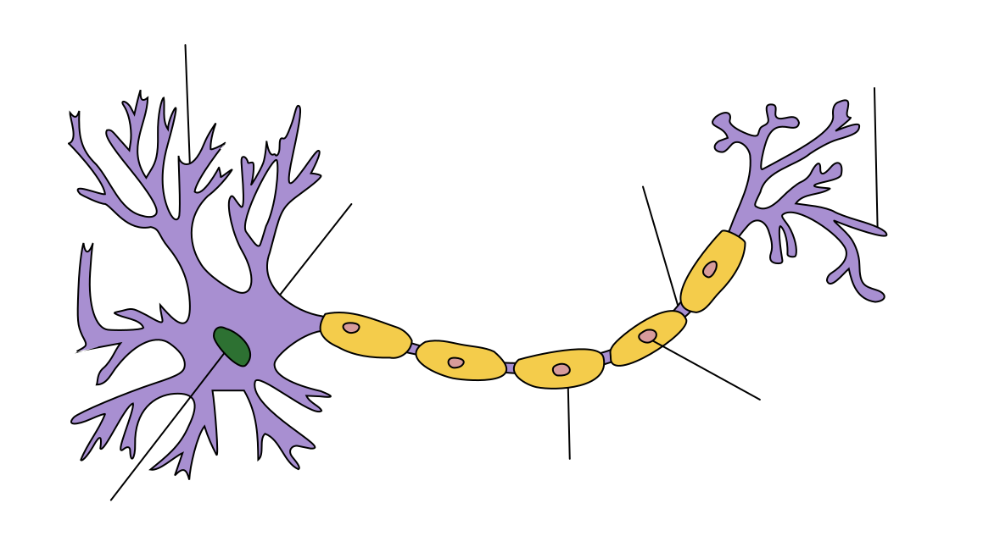
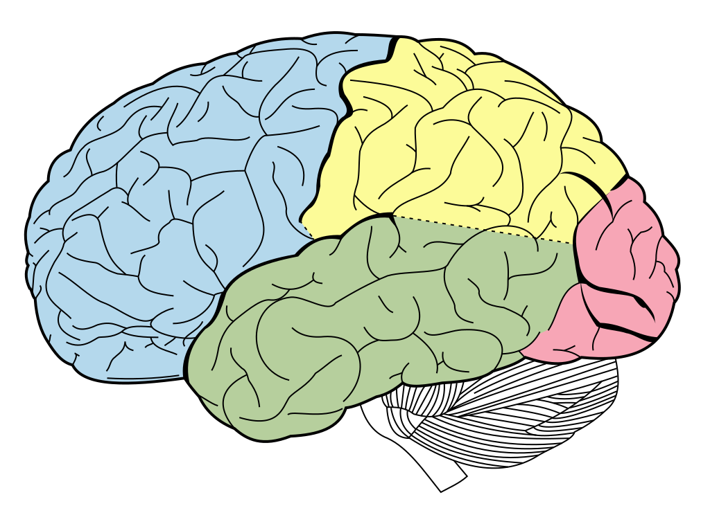
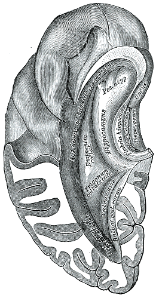

Brain & Neuroscience
From single neurons to the architecture of thought




Action Potential & Neuron Anatomy
Click to trigger action potential
Action Potential Steps
- Resting potential: -70mV
- Depolarization: Na⁺ rushes in → +40mV
- Repolarization: K⁺ flows out
- Hyperpolarization (refractory period)
- Return to resting potential
Key Facts
Speed: 1–120 m/s along myelinated axons
Duration: ~1–2 milliseconds
Refractory period: ~2ms (can't fire again)
Brain neurons: ~86 billion
Synapses: ~100 trillion connections
All-or-nothing lawMyelin speeds conduction